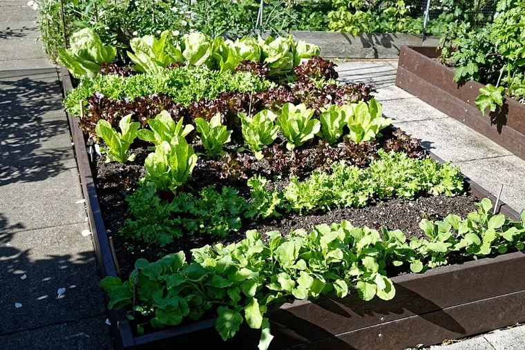

Your raised bed soil isn't used up at the end of the season - here's why it settles, how to refresh it with compost, and why replacing it is almost never the answer.
What you need
Your existing raised bed, at the end or start of a season
A few inches of finished compost or a compost-and-soil blend
A soil test every few years, if you want to feed it precisely
At the end of the first season a raised bed looks lower than you left it, and the instinct is that the soil is spent and needs replacing. It isn't, and it doesn't. Here is what actually happened and what to do about it.
Why the level dropped
The soil settled. A new bed's soil is full of air pockets and coarse organic matter, and over a season that organic matter decomposes and the whole thing compacts. A new bed can lose as much as half its height in the first year. That is normal, and it is not the same thing as the soil being used up.
Refresh it - don't replace it

A raised bed a season on - rich soil, a full planting. The level settles; the soil isn't spent. Photo: Acabashi · CC BY-SA 4.0, via Wikimedia Commons.
Each season, top the bed up with compost: spread a quarter-inch to an inch of finished compost over the surface, and either work it into the top several inches or, for a no-till bed, just leave it for the worms to pull down. That single habit does two jobs at once - it restores the volume the settling took, and it replenishes the organic matter and nutrients that decomposition and last year's harvest drew down. If the level dropped a lot, add more of a soil-and-compost blend to bring it back up.
Replacing the soil wholesale throws away a year of structure and soil life you paid for in patience. The only times it is worth it are the rare ones: a confirmed, persistent soil-borne disease, or a contamination problem a test turned up.
Feed it from a test, not from a bag
It is tempting to reach for a fertilizer at the same time you top up, but the honest amount is not something a guide can hand you:
Fertilizer recommendations without a soil test are guesswork. Say so.
suboptimal if ignored → advise
Mechanism: N-P-K sufficiency is site-specific and unknowable a priori.
Evidence: settled without a trial - epistemics.
remedy
We will not invent an NPK number. Your county extension office will test this soil for about $15. Until then, feed heavy feeders, do not feed root crops, and add compost.
Compost added every year covers most of what a home vegetable bed needs. Where you want to go further - correcting a real deficiency, or the acidity - a soil test every two or three years tells you what the bed is actually short of, so you add what it needs and nothing it doesn't.
The soil pH each crop wants, from the corpus (7 is neutral; below that is acid). Blueberry’s acid band never reaches the others’ — no single bed suits both.Source: corpus ph_range.
The short version
The bed settled; it isn't spent. Top it up with compost every season, test it every few years, and keep the soil you spent a year improving. The next guide answers the question that usually comes right after this one - whether you still need to rotate crops in a bed you're refreshing this way.

{kind=link}